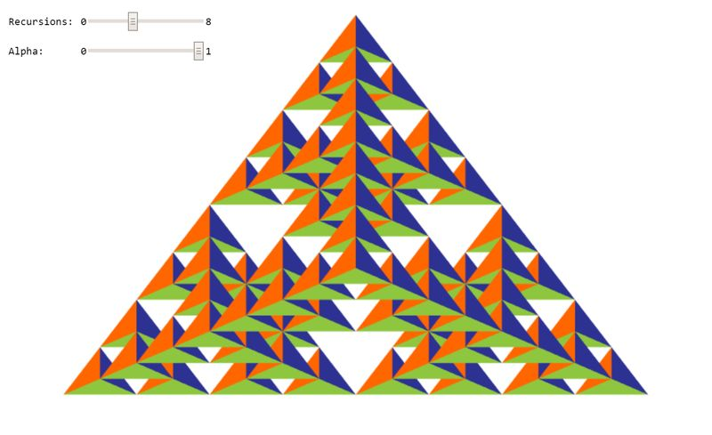

New Jersey Institute of Technology: CS 438 002
Interactive Computer Graphics Spring 2020
Assignment 1
Author: Last Name, First Name, Student Number
Date: 1/31/2020
Due: 2/12/2020
Go to Assignemt Home | Task 1 | Task 2 | Task 3
Task 3 (6 points)
Search for TODO_A1 in the JS file to find all tasks in the code!
Drawing of 3D objects:
3a: Create a 3d Sierpinski Gasket geometry composed of regular tetrahedra by calling this function recursively. Use the argument 'recursions' to specify the depth of the recursion. Use the function mix(a, b, lambda) for both the vertex and color interpolation with lambda = 0.5 (3 points)?
3b: Extend the previous vertex shader to handle 3d positions as input attributes (1 point).
3c: Adjust the vertex buffer object specification for positions and colors accordingly for usage of 3d points. In particular, you need to take care of the size, stride, and offset values of the buffer (1 point).
3d: Adjust the parameters of the drawArrays call in order to be able to deal with the new vertex buffer object (VBO) which now contains 3d-floating point positions (1 point).
Your result should look like in the image below, however, you can choose your own colors for the faces of the tetrahedra.
WebGL Canvas
Documentation
For this geometry, I followed a recursion pattern similar to task 11 in which I called divideTetra() inside of itself 4 times to create the shape given on the screen above. Within each recursion call I use the mix(a, b, lambda) function for vertex and color interpolation with lambda = 0.5. The greater the recursion, the more the tetrahedra divides.
Regarding the vertex buffer object (VBO), a few adjustments had to be made to the position and color attributes. Since we were working in a 3D space, the size variable, or number of elements per attribute, had to be incremented by 1 to compliment the z axis. The stride variable had to be multiplied by 6 as opposed to 5 because we have to take into account for the additional z axis on top of the 5 previous attributes we had being the x and y axis, and the colors r, g, b. Lastly, the offset for the color attribute needed to be multiplied by 3 instead of 2 to account for the z axis as well.
Regarding the rendering, the last parameter of the drawArrays() function call had to be adjusted from "geometry.length / 5" to "geometry.length / 6" to account for the z axis since we are working in a 3D space.
Happy Coding !
Instructor: Assoc. Prof. Dr. Przemyslaw Musialski
Email: przemyslaw.musialski@njit.edu
Grader :Ashish Kumar(ak2633@njit.edu)